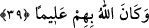

39- Allah’a ve âhiret gününe îman edip de Allah’ın kendilerine verdiğinden
(O’nun yolunda) harcasalardı ne olurdu sanki! Allah onların durumunu hakkıyle
bilmektedir.
“Onlara” yâni bu mezkûr gruplara “ne olurdu sanki Allah’a ve âhiret gününe îman
edip de Allah’ın kendilerine verdiği rızıktan” Allah rızâsına ulaşmak maksadıyla
“harcasalardı.” Çünkü burada Allah’a ve âhiret gününe inanmanın zikredilmesi,
harcamaların da elbette O’nun rıza ve sevabına ulaşmak için olmasını gerektirir. Yâni,
“Allah’a inanma ve O’nun yolunda harcama konusunda aleyhlerine olan nedir?” Bu
ifâde, menfaatlarının nerede olduğunu bilmemeleri ve bir şeye mâhiyetinin aksine bir
şekilde inanmalarından dolayı onları kınamaktadır. Belki onda kendilerine büyük
faydalar bulunduğunu bilmelerine vesile olur diye cevap talebi, onları tefekküre teşvik
edecek sûrette sevk olunmaktadır. Kendisine hiç bir zararı dokunmayacak olan bir şeye
dâvet edilen birinin ihtiyâten dahi olsa, bu dâvete icâbet etmesi gerektiğine, dâvet
edilen şeyde sayılamayacak kadar menfaat olduğu zaman ise durumun nasıl olacağına
dikkat çekmektedir.
“Allah, onların” gerçek “durumlarını hakkıyla bilmektedir.” Bu onların
cezâlandırılacağına dâir tehdiddir. Allah Teâlâ bununla şakîlerin niyetlerinin
aşağılığını, dar görüşlülüklerini, şu âdî dünyânın azıcık nimetleriyle yetinip uhrevî
makamlardan mahrum kaldıklarını, elde ettikleri dünyâlığı da Hakk’ı ve rızâsını talep
etmek için değil, gereksiz yerlere harcadıklarını haber vermektedir.
Her kimin ki cömertlikten şudur maksadı
Dünyâda artsın şöhreti, duyulsun adı
Fazîlet, cömertlik ve kerem bir memlekettir
Ancak o zâtın kapısı o memleketten dışardadır.
Hikmet ehlinden biri şöyle demiştir: “Tâatleri görsünler, duysunlar diye yapan
kimsenin durumu, kesesine çakıltaşı doldurarak çarşıya çıkan adama benzer. İnsanlar:
“Şu adamın kesesi ne kadar da dolu!” derler ama bu kese ona, insanların bu sözünden
başka fayda sağlamaz. Bu keseyle bir şey satın almak istese kendisine hiç bir şey
verilmez. İşte görsünler ve duysunlar diye amel edenler de böyledir.”
Hâmid el-Leffâf şöyle diyor: “Allah Teâlâ birini helak etmek isteyince onu üç şeyle
cezâlandırır:
1- Ona ilim nasip eder, fakat âlimler gibi amel etmesini engeller.
2- Ona sâlihlerle berâber olmayı nasîb eder, ama onların haklarını bilmekten alıkor.
3- Ona ibâdet ve tâât kapısını açar, fakat ihlası ondan men’ eder. Bütün bu anlatılanlar
ise sırf niyeti kötü, kalbi bozuk olduğu için başına gelir. Çünkü niyeti sahîh olsaydı,
Allah Teâlâ ona hem ilminden faydalanmayı, hem sâlihlerin haklarını bilmeyi, hem de